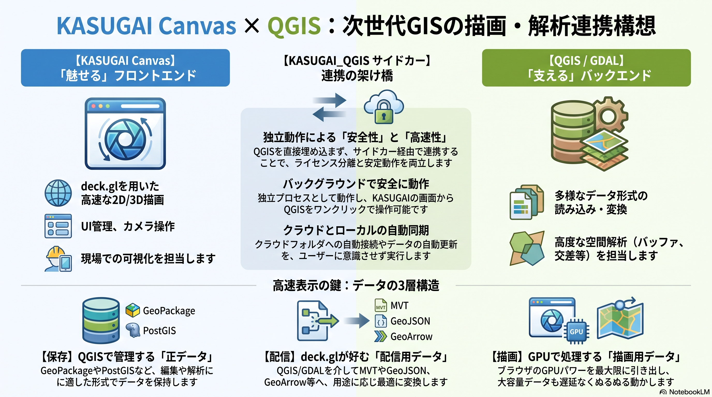

QGIS連携の正本ドキュメントは以下に集約されています（本ページは V7 テーマの位置付け紹介）：
QGIS連携の利用方法（qgis: ZIP 取り込み・フォルダ参照）／
方針・構想は本ページ下部「連携アーキテクチャ」に集約／実装済みの再現範囲。
QGIS連携
QGIS で作成したプロジェクトを、そのまま Canvas で再現できるようにするのが V7 のテーマです。QGIS プラグイン geo_webview（qgis_live_harness）がプロジェクトのレイヤーツリー・スタイル（.qml）・表示設定を .kasc + DATA/ としてエクスポートし、起動中の Canvas へ登録・切替（または静的ホスト経由で ?kasc= 再生）します。QGIS は多様な GIS データの正本・編集・解析基盤、Canvas は最終 2D/3D 表示エンジンという役割分担です。
「どの QGIS 要素がどの .kasc 行・オプションへ写るか」の対応表と、エンジン別の再現度は QGIS・GDAL連携 にまとめています。本ページはテーマ全体の構成と今後の方向です。
🔄 連携の流れ
QGIS プロジェクト（レイヤーツリー・スタイル・表示状態・テーマ・ブックマーク）
↓ geo_webview kasugaiExport（パネル「KASUGAI」/ GET :8089/kasugai / bridge / Canvas「QGISから取り込み」）
.kasc + DATA/（GeoJSON・ネイティブ参照・.qml・シンボル画像・bookmarks.xml）
↓
├─ ローカルアプリ: /api/projects/register 登録 → switchProject
├─ qgis-http フォールバック: geo_webview 内蔵サーバがエンジン+データを配信
├─ hosted: CDN ホスト版エンジン + /export-data/ 配信（サーバレス）
└─ emit_zip: Re:Earth geo_suite の qgis: 行が ZIP を直接取り込み🧩 再現の仕組み
📄 .kasc 行変換
ベクターはネイティブ参照（gpkg:/geoparquet:/flatgeobuf:/geojson:/duckdb:）または GeoJSON 変換、3D Tiles・XYZ（xyz:/base:）・WMS・GeoTIFF も行化。フィルタは where=、CSV/TSV は duckdb: へ
🔍 where= フィルタ引継ぎ
QGIS のレイヤーフィルタ（subsetString）を where=条件 として引き継ぎ。where= は全ベクター行で使用可（クエリ系は SQL 評価、geojson/fgb/parquet 等の全件読み込み系は shared/where-eval.js でクライアント評価）
🎨 QML スタイル再現
レイヤースタイルを DATA/*.qml として出力し style= で参照。<renderer-v2>（単一・分類・段階・ルール）・シンボルレイヤ・データ定義・ラベル・縮尺ルールをコンパイルして全エンジンで描画。凡例スウォッチ＋条件別表示切替も QML 由来
👁️ 表示状態の引継ぎ
表示チェック→| off、グループ→パンくずタイトル、排他グループ→//、不透明度→opacity=、縮尺表示→minScale=/maxScale=、出典→attr=、カメラ→cam:、ブックマーク→bookmark:、マップテーマ→theme:
🗂️ ベースマップ連携
「背景図」「ベースマップ」グループ（kasugai_basemap_groups で追加可）の XYZ は base: 候補行へ。最下段の表示中 XYZ は既定ベースマップとして先頭に配置
🔍 where= の全ベクター行対応
where=条件 はベクター行のオプションとして全形式で使えます。QGIS のレイヤーフィルタ（プロバイダ subsetString）はエクスポート時にこの where= へ写され、Canvas 側は同じ SQL WHERE サブセット文法で解釈します。gpkg:/duckdb:/sql: 等のクエリ系は SQL エンジンで評価し、geojson:/geoparquet:/flatgeobuf:/kml:/shp: 等の全件読み込み系は shared/where-eval.js の評価器（= != <> < <= > >=・AND/OR/NOT・括弧・IN・BETWEEN・LIKE/ILIKE・IS NULL・"識別子"/'文字列'/裸のASCII属性名）でクライアント側評価します。絞り込まれるのは描画と属性一覧（一覧の行は描画済み地物から作られ、クエリ系は SQL 側で条件を付けて再取得）で、全件読み込み系のベクター検索索引は引き続き全件対象です。V9 の view: 行のレイヤ指定に付ける ;where= も同じ評価系を利用します。
フィルタ・レイヤ表示・属性一覧・.kasc の適用関係（mermaid 図）は 1-4 属性 — フィルター を参照してください。
🔄 QGIS フィルタ式との互換性
対象となるファイル系ソース（GeoJSON/FlatGeobuf/GeoParquet/GPKG/CSV）のレイヤーフィルタは、QGIS 式（QgsExpression）ではなくプロバイダ SQLです。クエリビルダで設定した式もプロバイダへ渡る形で保存され、OGR プロバイダは受理できない式を拒否するため、subsetString に残っている式は必ずプロバイダが受理済みの文法です（未知フィールド参照も拒否されるため、式中の識別子は必ず実フィールドか FID 等の疑似フィールドです）。QGIS 式の全構文（~ 正規表現・@変数・$geometry）が使えるのは memory プロバイダ等だけで、それらはファイル参照にならないレイヤなので本機能の対象外（常に GeoJSON 変換）です。
プロバイダ別の式の方言（出典: QGIS subsetStringDialect()/subsetStringHelpUrl()）:
| レイヤソース | プロバイダ | subsetString の方言 | where= 経路 |
|---|---|---|---|
| GeoJSON / FlatGeobuf / GeoParquet / SHP | ogr | OGR SQL（QGIS クエリビルダ表示名「OGR SQL query」。subsetStringDialect() が GDAL ドライバの既定方言 OGRSQL を返し、ヘルプは gdal.org/user/ogr_sql_dialect.html を指す。文法 = OGR SQL SELECT の WHERE 句 = SetAttributeFilter と同文法。比較・論理・IN/BETWEEN/LIKE に加えて SUBSTR/CAST 等の関数・算術・ESCAPE 句・FID/OGR_GEOMETRY/OGR_STYLE 等の疑似フィールドも受理。=/IN の文字列等価は大文字小文字を区別しない） | where-eval 判定 → where= または GeoJSON 焼き込み |
| GPKG | ogr（GPKG ドライバ） | SQLite SQL（GPKG ドライバの既定方言は NATIVE = SQLite へ直通。QGIS 表示名は「GeoPackage query」。CASE/CAST/||/サブクエリも受理） | gpkg: 行 → Canvas 側 SQL エンジン評価（where-eval 経由なし） |
| CSV / TSV | delimitedtext | delimitedtext 固有 SQL 方言 | duckdb: 行 → Canvas 側 SQL エンジン評価 |
| memory | memory | QgsExpression（QGIS 式フル構文。~/@変数/$geometry/CASE 等） | 対象外（ファイル参照不可 → 常に GeoJSON 焼き込み） |
| PostGIS 等 DB / WFS | postgres 等 | PostgreSQL 等サーバ SQL / OGC フィルタ | 対象外（同上） |
出典: QGIS QgsDataProvider::subsetStringDialect() / subsetStringHelpUrl()（QGIS 3.40 以降・QGIS 4.x でも同一実装を確認。qgsogrprovider.cpp が GDAL ≥3.6 の GDAL_DMD_SUPPORTED_SQL_DIALECTS 先頭を「QGIS が使う既定方言」として採用し、NATIVE→「<ドライバ名> query」・OGRSQL→「OGR SQL query」・SQLITE→「SQLite query」を返す） | |||
対して shared/where-eval.js は OGR SQL WHERE 句準拠のクライアント側評価器です。下表の「式の定義」に列挙した構文（再帰的な式・算術・関数・疑似フィールド・ESCAPE句を含む）をそのまま解釈し、QGIS の subsetString（OGR SQL 方言）を等価評価できます。OGR SQL 仕様に無い構文（==/TRUE/FALSE/NULLリテラル・中置NOT・%・未対応関数）は受理せずパースエラーにします。
📋 OGR SQL対応表（WHERE句構文 = subsetString の範囲。SELECT文構文は対象外）:
| 式の定義（OGR SQL WHERE句構文） | 例 | where= 対応 | 備考 |
|---|---|---|---|
<式> =|!=|<>|<|<=|>|>= <式>（両辺とも任意の式） | "状況" = '工事中' ・ "a" = "b" | ✅ | != と <> は等価。=/!=/<> の文字列等価は大文字小文字を区別しない、< <= > >= は区別あり。両辺が数値解釈可能なら数値比較 |
<式> AND|OR <式> ・ NOT <式> ・ (<式>) | (num = 1 OR num = 2) AND "状況" = '工事中' | ✅ | — |
<式> IN ( <値>, … ) | 種別 IN ('A','B') | ✅ | 値リストのみ（サブクエリは仕様外）。照合は = 準拠の大小区別なし。否定は単項 NOT (…) で記述 |
<式> BETWEEN <式> AND <式> | 年度 BETWEEN 2020 AND 2024 | ✅ | x BETWEEN a AND b は x >= a AND x <= b と等価。否定は単項 NOT (…) で記述 |
<式> LIKE|ILIKE '<パターン>' [ESCAPE '<文字>'] | 名称 LIKE '春日井%' | ✅ | %=任意文字列・_=任意1文字。LIKE=大小文字区別・ILIKE=区別なし（GDAL≥3.9 は UTF-8 文字を考慮。ILIKE の非区別は ASCII・Latin-1・Latin Extended-A/B・ギリシャ・キリル範囲）。否定は単項 NOT (…) で記述 |
<式> IS [NOT] NULL | 備考 IS NULL | ✅ | NULL 判定はこの専用構文のみ（NULL リテラルは文法に存在しない） |
<式> = <リテラル> | <識別子> | <疑似フィールド> | <関数>() | <式> <算術> <式> | ( <式> )（再帰的な式構造） | num + 1 >= FID ・ CAST(x AS integer) = 1 | ✅ | 式の再帰定義: 各演算子のオペランドは任意の式（フィールド同士の比較・関数呼出・算術式も可）。<リテラル>='文字列'(''エスケープ)・数値、<識別子>=裸ASCII または "…"引用（日本語名は引用必須）。NULL リテラルは文法に存在しない |
<関数>( <引数>, … ) を含む式 | substr("name",1,1) = 'A' | ✅ | WHERE でも SELECT 句のフィールド式と同じ関数が使える — SUBSTR/CAST/CONCAT/hstore_get_value に対応。集計演算子（COUNT/SUM/MIN/MAX/AVG/STDDEV_*/DISTINCT）はフィールドリスト専用のため WHERE には現れない |
<式> +|-|*|/ <式>（算術） | num + 1 = 2 | ✅ | WHERE でも算術演算可。+ - * /・単項 -・括弧による優先順位に対応（% は仕様書に無いため非対応） |
FID・"_ogr_geometry_"・OGR_GEOMETRY・OGR_GEOM_WKT・OGR_GEOM_AREA・OGR_STYLE（疑似フィールド参照） | FID = 1 / OGR_GEOMETRY = 'Point' | ○ | WHERE でも使える特殊フィールド。レイヤが命名 FID 列を持つ場合はその列名も使える。同名の実フィールドより疑似フィールドが優先される |
出典: GDAL「OGR SQL dialect」仕様書 gdal.org/en/stable/user/ogr_sql_dialect.html（QGIS subsetStringHelpUrl() が指す正式仕様。属性フィルタ SetAttributeFilter の文法は SELECT の WHERE 句と同一）・GDAL「SQL SQLite dialect」仕様書 gdal.org/en/stable/user/sql_sqlite_dialect.html・web/shared/where-eval.js | |||
📋 OGR SQL SELECT文対応表（ogrsql: 行・AIツール queryOgrSql）
上表の WHERE 句に対し、ogrsql: 行は SELECT 文全体を受理します。実行エンジンは ブラウザ内 JS 実装（shared/ogr-sql.js）が主経路で、CDN 単体利用でも QGIS の有無で挙動が変わりません。JS で FROM を解決できない・構文未対応の場合のみ、ローカル QGIS 検出時に GDAL 本体（ogr.ExecuteSQL(dialect="OGRSQL")・QGIS3/4 両対応）へフォールバックします。QGIS 経路は JS 実装の差分検証（ゴールデンオラクル）としても使えます。
| 式の定義（OGR SQL SELECT文構文） | 例 | JS実装 | GDAL実行 （QGIS経路） | 備考 |
|---|---|---|---|---|
SELECT * | <テーブル>.* | SELECT * FROM 'rivers' ・ SELECT a.* FROM 'x' a | ✅ | ✅ | 全フィールド/指定テーブルの全フィールドを展開 |
<式> [AS <別名>]（フィールド・算術・関数・連結を含む列式） | SELECT name AS n, pop*2 AS p2 FROM 'cities' | ✅ | ✅ | 出力列名は別名またはフィールド名。WHERE と同じ式構文（比較・AND/OR/NOT・IN・BETWEEN・LIKE/ILIKE・IS NULL・+ - * /・|| 連結・SUBSTR/CAST/CONCAT/hstore_get_value） |
SELECT DISTINCT <項目>,… | SELECT DISTINCT kind FROM 'cities' | ✅ | ✅ | 射影タプルの重複除去。GDAL は DISTINCT 時にジオメトリを返さないが JS は保持する（地図レイヤ用途では保持が都合がよい既知の差分） |
<集計>([DISTINCT] <式>) | COUNT(*)：COUNT・SUM・AVG・MIN・MAX・STDDEV_POP・STDDEV_SAMP・STDDEV | SELECT COUNT(*) AS c, AVG(pop) FROM 'cities' | ✅ | ✅ | OGR SQL に GROUP BY は無く、集計のみの SELECT は結果全体を1行に集約。通常列と集計の混在は GDAL が拒否（"mixture of recordset mode"）するが、JS は全行集計＋先頭行の列値で受理する（寛容な上位互換） |
FROM 'name' | "name" | name（テーブル参照・[AS] 別名） | FROM 'rivers' r | ✅ | ✅ | FROM の解決は Canvas 側の仕組み: 読み込み済みレイヤータイトル → 'ds'.'layer' 形式 → DATA/ 相対パス・ファイルURL の順。QGIS 経路ではさらに QGIS プロジェクトレイヤー名/ID・SHP/PostGIS 等 GDAL が開けるソースも可。'ds'.'layer' は GPKG 特定テーブル等の参照に使う |
[[LEFT] JOIN <テーブル> [別名] ON <式>] | FROM 'a' x JOIN 'b' y ON x.id = y.id | ✅ | ✅ | OGR SQL の JOIN は LEFT JOIN 意味で、各プライマリ行には最初に一致した副テーブル行のみが結合される（直積ではない・GDAL実測で確認）。INNER JOIN は仕様外（JS はキーワードとして受理しない）。修飾名 a.b 参照に対応 |
WHERE <式> | WHERE pop >= 100 AND kind IN ('A','B') | ✅ | ✅ | 上の対応表の全構文を where-eval 経由で評価 |
ORDER BY <式> [ASC|DESC][,…] | ORDER BY pop DESC, name | ✅ | ✅ | 複数キー・式・出力列別名の参照が可能。方言差: GDAL 本体は ORDER BY に SELECT 別名を使えない（ORDER BY num 等の元フィールド名が必要）ため、QGIS 経路で拒否されるためこのケースは常に JS 実装で処理される（GDAL より寛容）。ほかに GDAL が拒否し JS のみ受理するもの： 裸の非 ASCII 識別子（WHERE 状況 = '工事中'。GDAL は "状況" クォート必須）・|| 文字列連結（OGR SQL には無く SQLite 方言の機能）・通常列と集計の混在（GROUP BY 非対応のため GDAL は "mixture of recordset mode" エラー）・副テーブル列の ORDER BY |
LIMIT <n> [OFFSET <m>] | LIMIT 100 OFFSET 50 | ✅ | ✅ | — |
疑似フィールド（FID・_ogr_geometry_・OGR_GEOMETRY・OGR_GEOM_WKT・OGR_GEOM_AREA・OGR_STYLE）を SELECT 列式/WHERE/ORDER BY で参照 | SELECT FID, OGR_GEOM_WKT FROM 'x' | ✅ | ✅ | JS 側は FID=feature.id→index・OGR_GEOMETRY=型名・OGR_GEOM_WKT=WKT化・OGR_GEOM_AREA=面積（度単位）・OGR_STYLE=NULL |
サブクエリ・UNION・GROUP BY・HAVING・CASE・空間関数（ST_*） | — | ❌ | ❌ | OGR SQL 仕様自体に存在しない構文（SQLITE 方言・DuckDB では使えるが OGRSQL 方言外）。JS 実装もパース拒否するため、混入したクエリはどちらの経路でも構文エラーになる |
実装: web/shared/ogr-sql.js（SELECT パーサ＋実行。WHERE 式は where-eval.js を再利用）・web/shared/qgis-ogr.js（QGIS Live relay → ogr.ExecuteSQL。FROM 参照は QGIS プロジェクトレイヤー名/ID・/vsicurl/ URL・ローカルパスを解決し Memory データソースで実行） | ||||
🗺️ エンジン別の ogrsql: 利用形態
| エンジン | ogrsql: ロード | ⏷クエリ編集 | 属性一覧 | AI/API（addLayer・setLayerFilter・queryOgrSql） |
|---|---|---|---|---|
| Cesium（メイン） | ✅ | ✅ クエリ全文編集 | ✅ クエリ系ディスパッチで全件取得 | ✅ |
| MapLibre | ✅ | ✅ クエリ全文編集 | ✅ 実行結果 GeoJSON を一覧 | ✅（player-api 共通） |
| OpenLayers | ✅ | ✅ クエリ全文編集 | ✅ 実行結果 GeoJSON を一覧 | ✅（player-api 共通） |
| Leaflet | ✅ | ✅ クエリ全文編集 | ✅ 実行結果 GeoJSON を一覧 | ✅（player-api 共通） |
| Navara | ✅ | ✅ クエリ全文編集 | ✅ 実行結果 GeoJSON を一覧 | ✅（player-api 共通） |
| GSI Maps（調整中） | ✅ | —（⏷ ボタン未実装） | ✅ 実行結果 GeoJSON を一覧 | ✅（player-api 共通） |
ロード経路は全エンジン共通（shared/vector-load.js → ogr-sql.js の JS 実行が主経路で、解決不能時のみ qgis-ogr.js 経由の GDAL 実行へフォールバック）。FROM のレイヤータイトル照合だけがエンジン別フック（resolveLayer）で、いずれも読み込み済みレイヤーの GeoJSON・またはそのソースURLへフォールバック解決する。queryOgrSql・setLayerFilter・addLayer(type=ogrsql) は shared/player-api.js/ai-chat.js 経由で全エンジン共通 | ||||
where= での疑似フィールド解決（where-eval 実装挙動）: FID=feature.id（無ければ配列 index）・_ogr_geometry_=geometry オブジェクト・OGR_GEOMETRY=型名（Point→POINT 等）・OGR_GEOM_WKT=WKT 化・OGR_GEOM_AREA=ポリゴン面積（度単位・穴控除）・OGR_STYLE=NULL（GeoJSON にスタイル情報なし）。解決順は仕様通り疑似フィールド優先。注意: FID の起点はドライバ/エクスポート時の連番と一致する保証がないため、FID 参照式の where= 出力は index ベースの近似となる
判定方針: where-eval は OGR SQL WHERE 句の構文（上表の式の定義）を網羅実装しているため、OGR SQL 方言の subsetString は原則そのまま where= へ出力可能です。残る非互換は「where-eval が受理しない式（仕様外構文・未対応関数・%）」のみで、その場合は従来通り GeoJSON 変換（フィルタをデータへ焼き込み。焼き込み側は QgsVectorFileWriter が subsetString を反映するため常に正確）にフォールバックします — 式を where= に書いたまま Canvas が解釈できず全件表示になる、というフィルタ喪失の回帰を防ぐ設計です。現行のエクスポートは gpkg:/duckdb: 系で where= を出力し、フィルタ付き GeoJSON/FlatGeobuf/Parquet 等のソースは GeoJSON 変換で正確に反映します。全ネイティブ形式で where= を出力する geo_webview 側の対応を進めています。
ogrsql: 行（OGR SQL の SELECT 全文）: WHERE 句だけでなく OGR SQL の SELECT 文をそのまま実行する行タイプです。ogrsql:タイトル|SELECT ... と書き、FROM には読み込み済みレイヤータイトル・'ds'.'layer' 形式・DATA/ 相対パス・ファイルURLを指定できます。主経路はブラウザ内 JS 実装（shared/ogr-sql.js）で SELECT 式・AS・DISTINCT・集計・JOIN/LEFT JOIN・WHERE・ORDER BY・LIMIT/OFFSET・疑似フィールドを処理し、JS で解決できない FROM（QGIS プロジェクトレイヤー名参照・ローカル SHP/PostGIS 等）や未対応構文だけ、ローカル QGIS（geo_webview/geo_driver の Live relay）検出時に ogr.ExecuteSQL(dialect="OGRSQL") で GDAL 本体へフォールバックします（QGIS 4 系でも動作確認済）。AI ツール queryOgrSql・addLayer(type=ogrsql)・⏷ のクエリ編集・setLayerFilter のクエリ全文置換からも利用できます。
⚙️ 実行エンジン方針：JSファースト・QGIS=フォールバック＋検証・WASM不採用
前提: QGIS 未導入のCDN利用者がメイン。OGR SQL の実行はブラウザ内 JS 実装（shared/ogr-sql.js）が常に主経路で、ローカル QGIS の有無で結果が変わらない構成です。ローカル QGIS（geo_webview/geo_driver の Live relay）は (a) JS が開けないソース（QGIS プロジェクトレイヤー名参照・ローカル SHP/PostGIS 等）や JS 未対応構文のフォールバック、(b) GDAL 本体をゴールデンオラクルとした JS 実装の差分検証、の2役に限定します（実測で確認済み: JS 解決可能なクエリは MCP 呼出 0 回、QGIS 専用ソースでのみ fallback 発動）。
WASM（gdal3.js）を採用しない理由（検討記録）
| 側面 | JS（現行） | gdal3.js（WASM） |
|---|---|---|
| 初期ロード | 数百行・DLゼロ | 20-40MB＋wasmコンパイル |
| OGR SQL セマンティクス | GDAL オラクルで差分検証済み（.testtmp/verify-ogrsql-diff.mjs・38/38 一致） | ネイティブ同一 |
| 変換パイプライン | バイナリ→JSオブジェクトを直接構築（GPKG は sql.js=SQLite WASM を Worker 内で使用済み） | 解析後に GeoJSON テキストを生成→JSへコピー→JSON.parse の二重シリアライズがあり、永続化・キャッシュ済みでもトータル速度は JS 劣後 |
| 開けない形式（gdal3.js 側） | — | GeoParquet（Arrow 未同梱=我々の形式）・PostGIS/Oracle 等DB系・WFS・プロプライエタリSDK（FileGDB 本家・ECW/MrSID）・任意ローカルパス（ブラウザ sandbox） |
| QGIS プロジェクトレイヤー参照 | relay 経由で可能 | 不可（ブラウザ内では QGIS 内部が見えない） |
WASM が速度面で勝てるのは「変換」ではなく GEOS による重量級ジオメトリ演算（数十万頂点の再投影・トポロジー演算）だけです。未整備形式（TAB/DXF/GML 等）のブラウザ内デコード需要が実際に出た場合は、SQL エンジンの置き換えではなく「FROM が開けない時だけ遅延ロードする形式パーサー」としての追加が正しい形です。
GDAL の役割は QGIS 側の事前変換に集約
「QGIS/GDAL が開ける任意のソース → CDN で表示」は、ブラウザで GDAL を動かすのではなく geo_webview のエクスポート（kasugai_export.py）が GDAL/QGIS 側で正規形式へ事前変換することで実現します：ネイティブ形式（GPKG/GeoJSON/GeoParquet/FGB）は参照、それ以外のベクター（SHP・PostGIS 等）は GeoJSON(EPSG:4326) へ変換、CSV/TSV は duckdb: 行へ、スタイルは .qml。これにより CDN 側はブラウザ向け形式の JS ローダーだけで完結し、ブラウザへの GDAL 導入の動機は消えています。
GDALオラクル差分検証で見つかった JS 実装の修正（検証ハーネスの実績）: 非ASCII裸識別子のトークナイズ・修飾名 a.name の出力列名・JOIN の「プライマリ行ごと最初の1件のみ結合」セマンティクスの3件を GDAL 実測に合わせて修正済み。残る差分は全て JS が寛容な上位互換（ORDER BY 別名・副テーブル列・||・裸の日本語識別子・通常列+集計混在・DISTINCT のジオメトリ保持）として上表に記録。
🗺️ エンジン別の QGIS 再現度
| エンジン | QML 再現度 |
|---|---|
| Cesium（メイン） | 最も広範に対応。entity / primitive 両経路・ドレープ（deck-drape・地形）・ラベル（配置モード/回転/背景/縮尺/上限数/コールアウト/DD）・クラスタ・heatmap.js 近似・凡例スウォッチ＋条件別表示切替。ラベル衝突回避のみ未再現 |
| MapLibre | QML → MapLibre スタイルレイヤ化＋ラベルベイク（bakeQmlLabels）＋ネイティブ衝突回避・配置モード別 symbol レイヤ・ヒートマップ/クラスタ |
| OpenLayers | QML → styleFunction＋declutter 衝突回避・ライン配置・ラベル背景・縮尺/最小地物サイズ・ヒートマップ/クラスタ。OGC 準拠最良 |
| Leaflet | QML → Path options＋永久 tooltip ラベル（DOM 装飾: 下線/字間/行間/背景/縦書き/回転/縮尺連動） |
| Navara（試験的） | 代表地物のスタイルをレイヤー単位マテリアルへ（地物単位は未対応） |
| GSI Maps（調整中） | QML 描画は未対応（凡例スウォッチのみ） |
🔗 配信・連携のバリエーション
- ローカルアプリ（kasugai_canvas.exe:8510）—
/api/projects/registerで外部プロジェクト登録 →switchProjectで即切替。登録先projects/へ直接出力も可 - QGIS 内蔵サーバ経路（route=local / qgis-http）— Canvas 未起動でも geo_webview の内蔵 HTTP（:8089）がエンジン HTML と
/export-data/を配信してブラウザ起動 - ホスト版（route=hosted）— CDN ホスト版エンジン＋QGIS 側配信で、Canvas 未インストール環境でも開ける
- 静的出力（emit_launchers / emit_zip）— 起動 HTML 同梱・ZIP 化でそのまま配布。納品用ローカル化（
DATA/httpへのダウンロード書換え）もstyle=/qml=を対象に含む - Re:Earth 連携—
reearth.txt出力で geo_suite のqgis:インスペクタ行から取り込み - AI オーケストレーション（QGIS Live Driver の MCP 接続）— 管理 → AI → データソースの「起動中の QGIS に接続」が稼働セッション（
~/.qgis-live/レジストリ）を自動検出し（ローカルアプリは/api/qgis-live/discover、CDN ホスト版は geo_webview:8089/live/mcp-discover）、QGIS の/mcpを AI チャットの MCP サーバーとして登録。qgis_pyeval/qgis_bridge_call等がチャットツールへ合成され、「この QGIS プロジェクトを Canvas で開いて」のような指示で AI がエクスポート〜表示まで一気通貫で駆動できる。実行系ツール（pyeval/eval/reload 系）は「書き込み系ツールも AI に公開する」のゲート＋実行ごとの確認対象
⚡ ライブ双方向連携（live sync）
geo_webview 4.9.0 以降で利用できる QGIS ↔ Canvas のライブ連動です。liveSyncStart bridge（または QSettings kasugai_live_sync）で有効化すると:
- QGIS → Canvas：レイヤ編集（地物追加/削除・ジオメトリ/属性変更）・スタイル変更・レイヤ追加/削除・ツリー可視性変更を 1.2 秒デバウンスで検出し、最後のエクスポート先へ差分エクスポート（未変更レイヤのデータ/スタイル書き出しを省略）。エクスポート時に
.kascへlive: <QGIS HTTPサーバ base URL>行とlive.jsonマニフェストを出力。Canvas は live.json ポーリング（1.5 秒）または/api/commandのliveSyncプッシュで検出し、.kasc テキストが変わっていなければ変更レイヤのみ再読込（cesium=DataSource差替 / maplibre=source.setData）。構造変化時は全体再適用（カメラ位置は維持） - Canvas → QGIS：カメラ停止時に
POST /live/cameraで QGIS キャンバスへ中心/縮尺/回転を逆通知、地物クリックでPOST /live/selectionで QGIS レイヤ選択を逆通知（ids 優先・無ければ座標+buffer選択）。GET /live/stateで連携状態を照会可能 - 逆方向オーサリング（.kasc → QGIS 書き戻し、geo_webview 4.11.0〜）：インスペクタでの表示トグル・テーマ適用・⏷フィルタ変更を
POST /live/writebackで QGIS プロジェクトへ書き戻し（{title,visible,where} + theme 名。レイヤツリーのチェック・subsetString・同名マップテーマへ反映。適用中は QGIS 側の再エクスポートを抑止して往復を防ぐ） - 地物投入（Canvas → QGIS、同4.11.0〜）：ツール「作図」パネルの「QGISへ送信」で描いたスケッチを、「エクスポート」パネルの「QGISへ送信」で選択レイヤーの GeoJSON を
POST /live/featuresで QGIS へ投入。スクラッチ(memory)レイヤとしてレイヤツリー先頭の「Canvas」グループへ追加され、同名再送は置換。AI からは kasugaiApi のsendLayerToQgis/sendDrawingsToQgis（cesium）でも実行可 - QGIS → Canvas 選択同期：QGIS 側の地物選択は
/live/stateの選択署名で検出し、GET /live/selectionで選択地物(GeoJSON)を取得して黄色ハイライトを全エンジンへ表示 - オンデマンド配信 API：
GET /live/layers（kasc タイトル付きカタログ）・GET /live/features?layer=&bbox=（範囲指定地物 GeoJSON）・GET /live/render?bbox=&w=&h=&bg=transparent（EPSG:4326 範囲の描画 PNG）。ライブ連携中はレイヤ一覧上部の「QGIS Live」パネルから、カタログのレイヤーを表示範囲追従の逐次読み込みで追加（「QGISからレイヤー追加」）、または「QGIS描画で表示」オーバーレイでメッシュ・未対応レンダラ等も QGIS エンジンの描画結果として表示できる（cesium/maplibre） - 対応エンジン：cesium/maplibre は差分適用＋カメラ/選択逆通知＋QGIS描画オーバーレイ、openlayers/leaflet/navara は全適用＋カメラ/選択逆通知、gsimaps は全適用＋カメラ/選択逆通知対応（調整中）。書き戻し・地物投入・QGIS選択ハイライトは cesium/maplibre/openlayers/leaflet/gsimaps/navara で対応
- follow↔live 統合：
?followカメラ追従は live セッションへ統合され/live/stateで取得。Cesium/Navara では pitch を保持した「2D QGIS ↔ 3D リンクビュー」として追従（?follow=topで従来の真俯瞰固定）
既存の保存時自動再エクスポート（kasugai_auto_export）はそのまま共存します。ライブ連携は保存を待たず編集操作をほぼ即時反映する上位経路で、/present の画面共有と併用すると「QGIS で編集中の画面を Canvas でライブ共有」が可能です。
🏗️ 連携アーキテクチャ（基本方針・構想 — 旧 docs/qgis-policy.html 集約）
基本方針: QGIS の画面や QgsMapCanvas を Canvas へ埋め込むのではなく、QGIS・GDAL が扱える多様な入力形式を、CesiumJS が描画できる形式へQGIS 側で変換・配信する。QGIS は正データ・編集・解析の基盤、Canvas は最終 2D/3D 表示エンジン。

QGIS 側（デスクトッププロセス）
データソース: GeoPackage / Shapefile / FileGDB / PostGIS / GeoTIFF / LAS / 3D都市モデル
↓
QGIS プロジェクト（レイヤーツリー・表示設定・スタイル・テーマ・ブックマーク・縮尺範囲）
↓ geo_webview（QgsProject / layerTreeRoot を API 走査 — .qgs ファイルは直接パースしない）
.kasc + DATA/（レイヤー行 + .qml + データ + シンボル画像 + bookmarks.xml）
↓
├─ CDN版（通常ブラウザ github.io + 外部ホストの .kasc+DATA/）
└─ アプリ版（kasugai_canvas.exe :8510 + ローカル .kasc+DATA/）エクスポート出力物（out_dir）の構成
out_dir/ 優先順: 設定 kasugai_output_path ＞ <Canvasインストール>/QGIS_projects/<project-slug>/ ＞ <ドキュメント>/kasugai_canvas_qgis
├─ kasugai_canvas.kasc 固定名。レイヤー行＋cam:/theme:/bookmark: 行
├─ bookmarks.xml qgis_bookmarks 形式（0件時は出力しない）
├─ [opt] <engine>.html + index.html emit_launchers 時の起動ページ＋案内
└─ DATA/
├─ <slug>.qml レイヤースタイル（saveNamedStyle）
├─ <slug>__<theme>.qml テーマ別スタイル（theme: 行の ;style= が参照）
├─ <slug>.<ext> ローカルデータ複製（.gpkg/.geojson/.fgb/.parquet）＋変換GeoJSON(EPSG:4326)
├─ <slug>/ XYZ タイルツリー / 3D Tiles tileset（サイズ上限 1GiB）
└─ <slug>_<asset>.svg/png .qml が参照するシンボル画像命名ルール（slug で .kasc 行・データ・スタイルが紐付く）：レイヤー名 → _slugify() で英数・_- 以外を _ へ置換（日本語名は layer＋連番にフォールバック、衝突時 _2…）。レイヤー行は geojson: タイトル | DATA/<slug>.geojson | on | style=DATA/<slug>.qml の形で同じ slug を参照するため、行・データ・.qml の3者はファイル名で対応する。
ZIP（kasugai_canvas_<ch>.zip）は別枠：パネルの ZIP ボタン・index.html のDLリンクは /export-data/kasugai_canvas_<ch>.zip がその場で固めて返す方式（out_dir に残さず常に最新）。emit_zip=True 指定時のみ out_dir に出力。Re:Earth geo_suite の qgis: 行が URL で直接取り込める。
役割分担
| 役割 | 担当 |
|---|---|
| メインUI、レイヤー管理、カメラ、最終表示 | KASUGAI Canvas |
| ベクター、タイル、Terrain、3D Tilesの描画 | CesiumJS（GeoJsonDataSource / GeoJsonPrimitive / ImageryLayer / TerrainProvider / Cesium3DTileset） |
| GLB、点群、3DGS等の補助3D描画 | Three.js |
| 多様な形式の読み込み・変換（事前変換はここで完結） | GDAL・OGR / QGIS（geo_webview エクスポート） |
| 編集・属性・高度な空間解析 | PyQGIS / QGIS Processing |
| 正データの保存 | GeoPackage / PostGIS / FileGDB等 |
データの3層構造
編集用データと描画用データを同じ形式に統一しない。正データ、配信用データ、描画データを分離する。
| 層 | 目的 | 主な形式 |
|---|---|---|
| 正データ | 編集、属性、解析、保存 | GeoPackage、PostGIS、FileGDB、GeoTIFF |
| 配信用データ | 範囲・ズーム単位の取得 | GeoJSON、GeoParquet、FlatGeobuf、XYZ、WMTS、3D Tiles、MVT/PMTiles（MapLibre） |
| 描画データ | GPUへ効率よく渡す | GeoJSON → GeoJsonDataSource（entity）/ GeoJsonPrimitive（バッチ描画） |
ベクター形式の使い分け（QGIS→Canvas）
GeoPackage / FileGDB / PostGIS
↓ QGIS Processing / GDAL・OGR（geo_webview エクスポート時の変換）
┌────────────────────────────────────┐
│ 小規模・編集結果 → GeoJSON │ geojson: → GeoJsonDataSource
│ 中規模・置くだけ → GeoParquet │ geoparquet: / flatgeobuf:
│ / FlatGeobuf│ （hyparquet / flatgeobuf でブラウザ内デコード）
│ 大規模・絞り込み → duckdb:/sql:│ SQL絞り込み・bbox=auto で表示範囲だけ読む
│ 広域・範囲配信 → MVT(将来) │ MapLibre は mvt:/pmtiles: 実装済み
└────────────────────────────────────┘ラスタ連携
公開XYZ / WMTS ──→ QGIS と KASUGAI が同じ配信元をそれぞれ直接利用（再配信不要）
QGIS管理ラスタ ──→ QGIS Server→WMS/WMTS ・ 事前タイル化→XYZ ・ COG/独自配信 ・ ローカルファイル直接取得
（WMTS は TileMatrixSet・座標系・原点・Y軸方向の一致確認が必要。不一致時は XYZ→WMTS アダプター）DEM・3D データ：Canvas が直接描画
DEM標高タイル → TerrainProvider（地理院標高PNGデコード実装済み）
3D Tiles → 3dtiles: → Cesium3DTileset
QGISベクター → GeoJSON等 → GeoJsonDataSource → CLAMP_TO_GROUND → DEM/3D Tiles 表面へドレープ高さ基準はデータごとに管理する。標高と WGS84 楕円体高が異なるデータを重ねる場合は QGIS 処理層または Canvas 側で補正する。
QGIS・GDAL 機能層（Canvas から呼び出す処理の使い分け）
KASUGAI Canvas
↓ HTTP / IPC
連携API
├─ GDAL・OGR：入出力、形式変換、CRS、タイル化
└─ PyQGIS / QGIS Processing：編集、属性、高度な空間解析| 処理 | 推奨実装 |
|---|---|
| GeoPackage・GeoTIFFの読み書き | GDAL・OGR |
| Shapefile・FileGDBの変換 | GDAL・OGR / PyQGIS |
| CRS変換 | GDAL・OGR / QGIS |
| GeoJSON・MVTの生成 | GDAL・OGR / QGIS Server / 専用タイル処理 |
| バッファ・交差・クリップ | QGIS Processing |
| 属性検索・編集 | PyQGIS / GDAL・OGR / データベースAPI |
| 3D Tiles・点群生成 | 専用変換処理、必要に応じてQGISと連携 |
選択・編集・再描画（構想）
選択: KASUGAI picking → layerId/featureId → 連携API → 属性・ジオメトリ取得 → 属性パネル
編集: KASUGAI編集UI → GeoJSON/JSON Patch → PyQGIS/GDAL/DB → GeoPackage/PostGIS/FileGDB
再描画: 変更地物またはタイルだけ再取得（正データを直接描画形式に置き換えず、配信用データを更新）カメラ・CRS
KASUGAI cameraState（正本=Canvas）: longitude/latitude/zoom/bearing/pitch
pitch = Cesium camera.pitch と同符号（水平0°・真上+90°・真下−90°）
→ 必要に応じて QGIS 処理層へ中心座標・範囲を通知
CRS: Web表示は WGS84 経度緯度を基本、編集・解析時は元レイヤーの CRS を維持実装ロードマップ（方針としての工程表）
| Phase | 内容 | 状態 |
|---|---|---|
| 1 | GeoJSON連携と属性・選択API | ✅ 実装済み |
| 2 | GDAL・OGRでGeoPackage/FileGDB/GeoTIFF 読み書き | ✅ エクスポート側で対応 |
| 3 | KASUGAI向け変換API | ✅ kasugaiExport として実装済み |
| 4 | QGIS→PMTiles/MVT 生成経路 | ○ MapLibre 側読み込み実装済み・生成経路は未実装 |
| 5 | QGIS Processing / PyQGIS 連携API | 未実装（qgis_pyeval で部分的に代替可） |
| 6 | GeoArrow / Arrow の直接読み込み | 未実装（GeoParquet/FlatGeobuf は実装済み） |
| 7 | QGIS管理ラスタの WMTS・事前XYZ・COG 配信 | 未実装 |
| 8 | Terrain・3D Tiles・点群とのドレープ連携 | ✅ 実装済み |
設計上の結論: KASUGAI Canvas をメイン画面および最終 2D/3D 表示エンジンとし、QGIS・GDAL を多様な GIS データを CesiumJS が描画できる形式へ変換・配信する基盤として利用する。QGIS の画面を埋め込まず、正データを維持したまま用途に応じて GeoJSON/GeoParquet/FlatGeobuf/XYZ/WMTS/3D Tiles 等へ変換する。小規模=GeoJSON、中規模=FlatGeobuf、大規模・広域=PMTiles/MVT（MapLibre 実装済み）と duckdb:/sql: の併用が基本。
🚧 未対応・ロードマップ（Issue）
「QGIS プロジェクトをそのまま再現する」ための残課題は GitHub Issue で管理しています。詳細は QGIS・GDAL連携 — 未対応・検討中 も参照。
| 領域 | 内容 | Issue |
|---|---|---|
| プロジェクト直接読込 | .qgz/.qgs を Canvas が直接パースして再現（エクスポート不要化） | #49 |
| レイヤー種別 | メッシュ・ベクタータイル・点群・アノテーション等（現在スキップ） | #50 |
| サービス系 | WMTS の tilematrixset 系 URI 解釈 | #51 |
| ラスタ | レンダラ設定（バンド/疑似カラー/ヒルシェード）・非GeoTIFF 形式 | #52 #53 |
| ベクタースタイル | 未対応レンダラの残り（geometryGenerator一般形の一部・diagram/変位等。 InterpolatedLine は Cesium で幅/色の線形補間を再現）・ラベル詳細 （大半対応済み。衝突回避は全主要エンジンで実装: MapLibre=ネイティブ・ OL=declutter・Cesium=自前画面投影・Leaflet=DOM衝突判定。残: ラベルマスクは背景近似・装飾ラインの形状は OL のみ） | #54 #55 |
| 属性・時系列 | フィールド別名/displayExpression・temporal → time= | #56 #57 |
| 描画設定 | ベクター不透明度・ブレンドモード・描画効果 | #58 |
| ツリー詳細 | グループ折りたたみ・カスタム順・凡例カスタマイズ | #59 |
| 3Dビュー | QGIS 3D シーン設定 → Canvas カメラ/地形/立ち上げ | #60 |
| 自動反映 | プロジェクト保存フックで再エクスポート＋即時切替 | #61 |